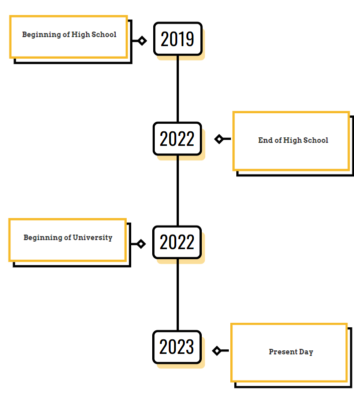

Education
- Mount Royal University
- Bachelor of Computer Information Systems
- 2022 - Present
- Calgary Alberta
- Crescent Heights High School
- 2019 - 2022
- Strengths in Science, Social Studies and Language Arts

Work/Volunteer Experience
- Front End Worker - Van Express
- July 2022
- Volunteered 30 Hours
- Dealt with large lines and many customers
- Helped with dine-in and take-out
- Cleaned and Refilled
- Volunteer Coach - Crescent Heights High School Badminton Team
- Febuary 2023 - Present
- Volunteered 30 Hours
- Helped coach students
- Helped organize exhibitions
- Helped head coach with making decisions
Projects
- Temperature UI Project
-
In this assignment, we designed a program in python that would prompt the user for the temp
and returned a graphical image made in python telling us how cold or warm the drink was.
- Blueprints Board Game Project
-
In this assignment, we designed a program that implements the rules from Blueprints, the board game
into python.
- Punto Banco
-
In this assignment, we deisgned a program in Java that mimics Baccarat but without the Dragon 7 and
Panda 8 features. We designed following MVC architecture convetions and used a arraylist to
load the data and write the data onto a txt file.
- Toy Store
-
In this assignment, we deisgned a toy store in Java. This assignment was similar to Punto Banco but
used abstract classes to differentiate the data from the txt file. We also implemented more JUnit testing and
custom exception classes.
- Website
-
In this assignment, we designed a website in Html and CSS. This website is just 1 example
of the website we designed over the semester.
Achievements
- Bronze for Badminton Cities
- 3.9 GPA in semester 1
- Placed 5th at Zones for Badminnton
Skills
- Coding
- Badminton
- Cooking
- Hard Worker
Hobbies
- Working Out
- Volleyball
- Badminton
- Being in Nature
- Hanging out with Friends